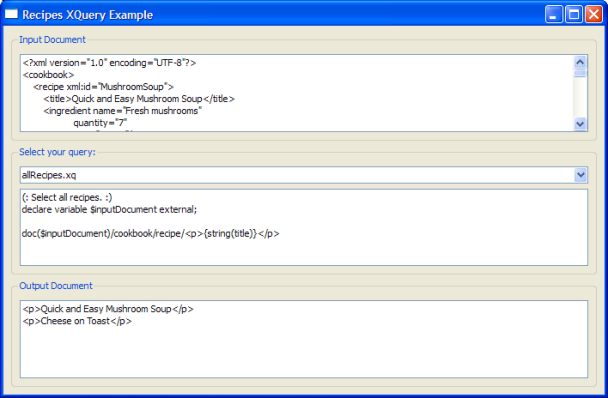

Recipes Example
Using Qt XML Patterns to query XML data loaded from a file.
The Recipes example shows how to use Qt XML Patterns to query XML data loaded from a file.
Introduction
In this case, the XML data represents a cookbook, cookbook.xml, which contains <cookbook> as its document element, which in turn contains a sequence of <recipe> elements. This XML data is searched using queries stored in XQuery files (*.xq).
The User Interface
The UI for this example was created using Qt Designer:

The UI consists of three group boxes arranged vertically. The top one contains a text viewer that displays the XML text from the cookbook file. The middle group box contains a combo box for choosing the XQuery to run and a text viewer for displaying the text of the selected XQuery. The .xq files in the file list above are shown in the combo box menu. Choosing an XQuery loads, parses, and runs the selected XQuery. The query result is shown in the bottom group box's text viewer.
Running your own XQueries
You can write your own XQuery files and run them in the example program. The file xmlpatterns/recipes/recipes.qrc is the resource file for this example. It is used in main.cpp (Q_INIT_RESOURCE(recipes);). It lists the XQuery files (.xq) that can be selected in the combobox.
<!DOCTYPE RCC><RCC version="1.0">
<qresource>
<file>files/cookbook.xml</file>
<file>files/allRecipes.xq</file>
<file>files/liquidIngredientsInSoup.xq</file>
<file>files/mushroomSoup.xq</file>
<file>files/preparationLessThan30.xq</file>
<file>files/preparationTimes.xq</file>
</qresource>
</RCC>
To add your own queries to the example's combobox, store your .xq files in the examples/xmlpatterns/recipes/files directory and add them to recipes.qrc as shown above.
Code Walk-Through
The example's main() function creates the standard instance of QApplication. Then it creates an instance of the UI class, shows it, and starts the Qt event loop:
int main(int argc, char* argv[]) { Q_INIT_RESOURCE(recipes); QApplication app(argc, argv); QueryMainWindow* const queryWindow = new QueryMainWindow; queryWindow->show(); return app.exec(); }
The UI Class: QueryMainWindow
The example's UI is a conventional Qt GUI application inheriting QMainWindow and the class generated by Qt Designer:
class QueryMainWindow : public QMainWindow, private Ui::QueryWidget { Q_OBJECT public: QueryMainWindow(); public slots: void displayQuery(int index); private: QComboBox *ui_defaultQueries = nullptr; void evaluate(const QString &str); void loadInputFile(); };
The constructor finds the window's combo box child widget and connects its currentIndexChanged() signal to the window's displayQuery() slot. It then calls loadInputFile() to load cookbook.xml and display its contents in the top group box's text viewer . Finally, it finds the XQuery files (.xq) and adds each one to the combo box menu.
QueryMainWindow::QueryMainWindow() { setupUi(this); new XmlSyntaxHighlighter(findChild<QTextEdit*>("inputTextEdit")->document()); new XmlSyntaxHighlighter(findChild<QTextEdit*>("outputTextEdit")->document()); ui_defaultQueries = findChild<QComboBox*>("defaultQueries"); QMetaObject::connectSlotsByName(this); connect(ui_defaultQueries, QOverload<int>::of(&QComboBox::currentIndexChanged), this, &QueryMainWindow::displayQuery); loadInputFile(); const QStringList queries(QDir(":/files/", "*.xq").entryList()); for (const auto &query : queries) ui_defaultQueries->addItem(query); if (queries.count() > 0) displayQuery(0); }
The work is done in the displayQuery() slot and the evaluate() function it calls. displayQuery() loads and displays the selected query file and passes the XQuery text to evaluate().
void QueryMainWindow::displayQuery(int index) { QFile queryFile(QString(":files/") + ui_defaultQueries->itemText(index)); queryFile.open(QIODevice::ReadOnly); const QString query(QString::fromLatin1(queryFile.readAll())); findChild<QTextEdit*>("queryTextEdit")->setPlainText(query); evaluate(query); }
evaluate() demonstrates the standard Qt XML Patterns usage pattern. First, an instance of QXmlQuery is created (query). The query's bindVariable() function is then called to bind the cookbook.xml file to the XQuery variable inputDocument. After the variable is bound, setQuery() is called to pass the XQuery text to the query.
Note: setQuery() must be called after bindVariable().
Passing the XQuery to setQuery() causes Qt XML Patterns to parse the XQuery. QXmlQuery::isValid() is called to ensure that the XQuery was correctly parsed.
void QueryMainWindow::evaluate(const QString &str) { QFile sourceDocument; sourceDocument.setFileName(":/files/cookbook.xml"); sourceDocument.open(QIODevice::ReadOnly); QByteArray outArray; QBuffer buffer(&outArray); buffer.open(QIODevice::ReadWrite); QXmlQuery query; query.bindVariable("inputDocument", &sourceDocument); query.setQuery(str); if (!query.isValid()) return; QXmlFormatter formatter(query, &buffer); if (!query.evaluateTo(&formatter)) return; buffer.close(); findChild<QTextEdit*>("outputTextEdit")->setPlainText(QString::fromUtf8(outArray.constData())); }
If the XQuery is valid, an instance of QXmlFormatter is created to format the query result as XML into a QBuffer. To evaluate the XQuery, an overload of evaluateTo() is called that takes a QAbstractXmlReceiver for its output (QXmlFormatter inherits QAbstractXmlReceiver). Finally, the formatted XML result is displayed in the UI's bottom text view.
Note: Each XQuery .xq file must declare the $inputDocument variable to represent the cookbook.xml document:
(: All ingredients for Mushroom Soup. :)
declare variable $inputDocument external;
doc($inputDocument)/cookbook/recipe[@xml:id = "MushroomSoup"]/ingredient/
<p>{@name, @quantity}</p>
Note: If you add add your own query.xq files, you must declare the $inputDocument and use it as shown above.